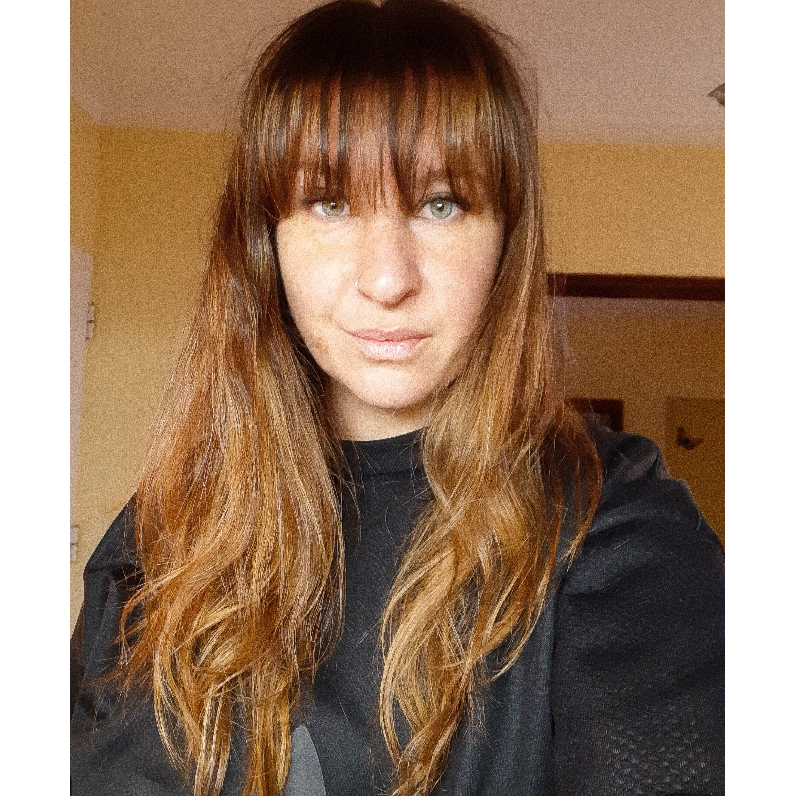

Maria Belen Tarantino

Datos personles
- NOMBRE: Maria Belen Tarantino
- FECHA DE NAC: 22/03/1987
- NACIONALIDAD Y PROVINCIA: Argentina, Bs As
- CORREO ELECTRONICO: mbelentarantino@gmail.com
Educación
- 2004: Bachillerato en Economia y Gestión de las Organizaciones. Escuela San Francisco de Asis, Llavallol
- Coreógrafa
- Maquilladora y Peinadora
Experiencias laborales
- Actualmente trabajando en estudio de Danzas Gmg
- Makeup & hair en eventos sociales (Novias, Quinciañeras, Madrinas, etc)
- 2018-2020: Dueña de Estudio de Danzas "Estudio 11. Danza y Arte"
- Comercio: Atención al público, Proveedores
Skills
Tengo mucha habilidad bailando, especialmente los ritmos urbanos. Y a la vez tengo mucha habilidad para enseñar.
Hobbies
- Hago ropa.
- Me encantan los deportes, voy al gimnasio.
- Disfrutar de mis amigos.
Arranque la carrera de programador por estabilidad economica y laboral. Siempre mis trabajos fueron del dia a dia, excepto cuando trabaje en comercio, sin saber si mañana iba a tener trabajo. la Danza por cantidad de alumnos, maquillaje
cuando sale algun evento. Muy dificil todo a pesar de que siempre trabaje de lo que me gusta.
Me encantaria aprender esta profesión, es dar un giro total a mi vida. Mi meta es poder hacerlo y poder trabajar en programación. En un futuro también poder hacer la de diseño gráfico, me es muy interesante!, me encanta.